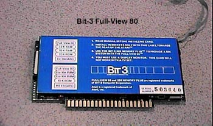

The Bit-3 Full-View 80 Column Card

When the Atari 800 was released
several companies began to make an assortment of option cards for the 4
slots that were in the Atari 800 computer. A Company called
Bit-3 designed and sold an 80 column video card (shown above) which was
inserted into Slot #3 on the Atari 800. It had a connector
cable which you could snake through your Atari 800 (if you took apart the
case) and you could run the RCA jack out of the back of the 800 where the
RF cable was run, then you could snake the other half of the cable around
to the composite video port and plug its plug into the video output port
of the Atari 800. When the board was not active it would pass
the audio through the board out to your monitor, when activated (either
by using a patch to your DOS or running a USR command from DOS) the board
would become active and display clear, sharp 80 column text.
Another nice added benefit found with the board was that when the board
was activated, it returned an additional 3900 bytes of memory for use in
programs.